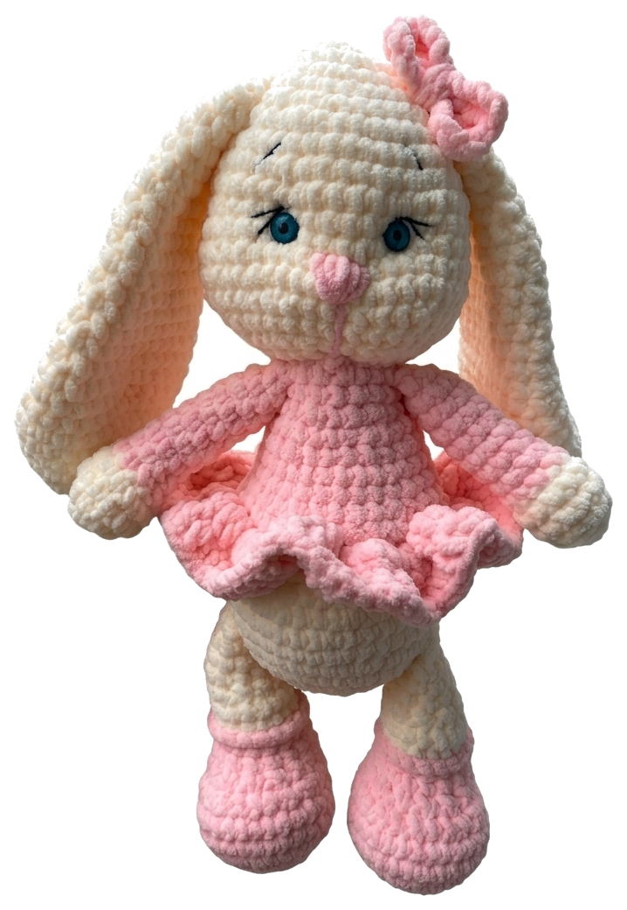
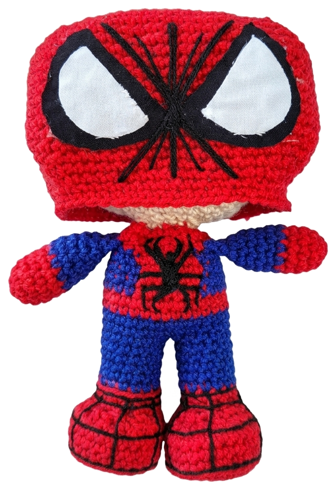
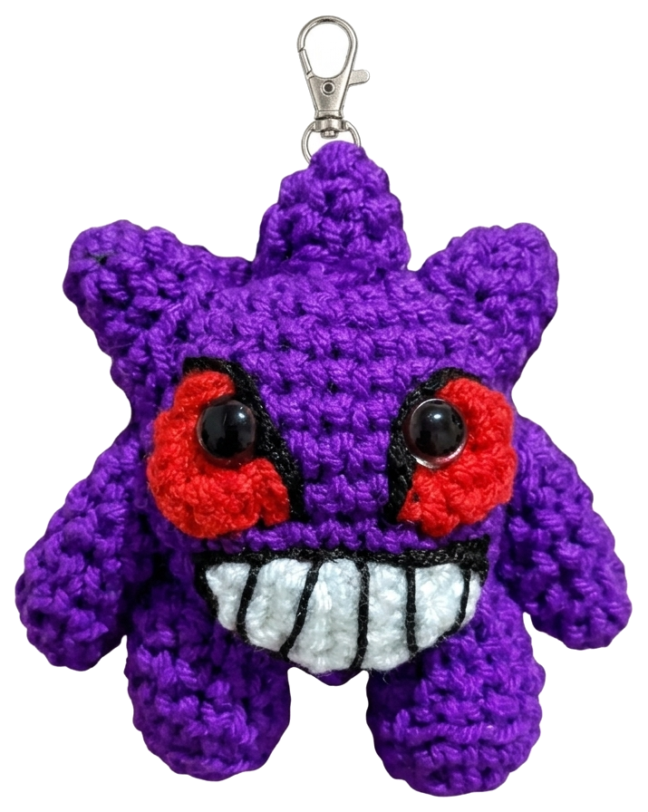

Ternura & Apego
Peluches & Animales
Conejitas, ositos, sonajeros para bebés y animales tejidos en felpa o algodón suave.
Explorar trabajos →Sky es un espacio de creatividad para el diseño en tejidos y amigurumi hecho en crochet: damos vida a personajes, animales, peluches, llaveros y productos personalizados bajo pedido.

No trabajamos con un inventario fijo: cada trabajo que ves en nuestras colecciones es una muestra real que adaptamos a tus colores, tamaño y criterios.
Conejitas, ositos, sonajeros para bebés y animales tejidos en felpa o algodón suave.
Explorar trabajos →
Superhéroes, figuras temáticas y muñecos personalizados inspirados en personas reales.
Explorar trabajos →
Mini personajes y animalitos con herrajes resistentes para bolsos, llaves o eventos.
Explorar trabajos →Explora nuestros trabajos terminados. Si te gusta alguno, podemos tejer uno similar adaptado a tus preferencias y criterios.
Al ser piezas hechas a mano bajo pedido, acordamos contigo cada detalle antes de empezar a tejer.
Nos compartes el personaje, animal o foto de referencia junto con el uso que tendrá (regalo, bebé, llavero o decoración).
Definimos altura aproximada, tipo de hilo (algodón o felpa chenille), paleta de colores y accesorios.
Tejemos cada pieza punto por punto con relleno siliconado hipoalergénico y costuras firmes.
Te enviamos fotos del resultado final y preparamos tu amigurumi listo para regalar.
Cada peluche, personaje o llavero se cotiza y fabrica según tus criterios: tamaño, nivel de detalle y tiempo de entrega.
“Pedí una conejita bailarina rosa para el cumpleaños de mi sobrina y superó todas mis expectativas. El tejido es sumamente prolijo y suave.”
“La muñeca personalizada en su caja quedó idéntica con sus gafas y accesorios. Un regalo único que encantó desde el primer segundo.”
“Encargué llaveros de personajes para regalar y cada detalle bordado está hecho con muchísima dedicación.”